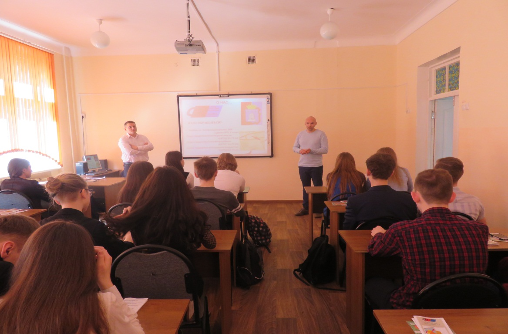

Дни финансовой грамотности в СОШ № 2 г. Котовска
Дни финансовой грамотности начались 10 апреля 2017 года с занятия в средней общеобразовательной школе № 2 города Котовска, которое провели представители АО МК «Фонд содействия кредитованию малого и среднего предпринимательства Тамбовской области» (далее - Фонд) генеральный директор А.М. Блудов, заместитель генерального директора А.Н. Шепелёв и руководитель Центра поддержки молодёжных инициатив А.И. Евсейчев.
Пропаганда и популяризация предпринимательской деятельности, а также бизнес-образование молодёжи является одним из приоритетных направлений деятельности Фонда.
На мероприятии А.М. Блудов акцентировал внимание на том, что финансовая грамотность является одним из главных условий повышения уровня жизни как граждан, так и всей страны. Учитывая усложнение системы и появление разнообразных услуг, граждане должны уметь принимать взвешенные решения по их использованию, получать полезную информацию в области денежных отношений, уметь планировать бюджет.
В конце мероприятия все желающие смогли задать интересующие их вопросы представителям Фонда.
